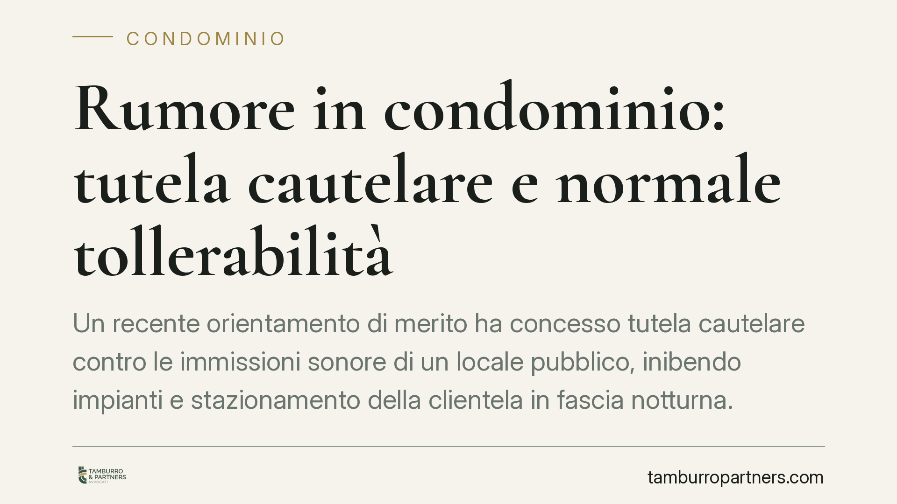

Rumore in condominio: tutela cautelare e normale tollerabilità
Un recente orientamento di merito ha concesso tutela cautelare contro le immissioni sonore di un locale pubblico, inibendo impianti e stazionamento della clientela in fascia notturna. La decisione conferma un principio consolidato: la regolarità amministrativa dell'attività non esclude la responsabilità civile verso i residenti. Vediamo i profili tecnici e le ricadute, anche sul piano contrattuale.

Il caso e il contesto
Un gruppo di residenti lamentava il disturbo prodotto da un locale pubblico: musica, impianti di diffusione sonora e stazionamento della clientela nelle ore serali e notturne. Il giudice di merito ha accolto la domanda cautelare, inibendo l'uso degli impianti sonori oltre un certo orario e limitando l'affollamento esterno dopo le 22:00.
Per correttezza metodologica precisiamo che gli estremi completi della pronuncia (numero di ruolo, data, sezione) non risultano al momento verificabili in forma ufficiale. Trattiamo quindi la vicenda come espressione di un orientamento di merito, non come precedente nominativamente citabile.
Inquadramento normativo
La materia ruota attorno all'art. 844 c.c., che consente al proprietario di impedire le immissioni (di fumo, calore, rumore) provenienti dal fondo del vicino quando superano la normale tollerabilità. È un criterio relativo: va valutato caso per caso, tenendo conto della condizione dei luoghi e del contemperamento tra attività produttiva e diritto al riposo.
Qui occorre una distinzione che spesso viene appiattita. Sul piano amministrativo, il DPCM 14 novembre 1997 fissa il cosiddetto limite differenziale notturno in 3 dB: è la soglia che misura lo scarto tra rumore ambientale e rumore di fondo. Sul piano civilistico, invece, la Cassazione utilizza il superamento di circa 3 dB rispetto al rumore di fondo come criterio *orientativo* della normale tollerabilità ex art. 844 c.c., ma non come soglia rigida e vincolante. I due piani non coincidono: un'attività può rispettare i limiti amministrativi ed essere comunque fonte di immissioni intollerabili sul piano civile.
Sul fronte processuale, l'art. 700 c.p.c. offre la tutela cautelare atipica (anticipatoria e urgente). Presuppone due requisiti: il fumus boni iuris, cioè l'apparente fondatezza del diritto fatto valere; e il periculum in mora, cioè il rischio di un pregiudizio grave e irreparabile nell'attesa del giudizio ordinario. In materia di immissioni, il pregiudizio alla salute e al riposo (art. 32 Cost.) tende a integrare agevolmente il periculum.
Il nodo della residualità
Un profilo tecnico merita attenzione. L'art. 700 c.p.c. ha carattere residuale: può essere invocato quando l'ordinamento non offra uno strumento cautelare tipico. Parte della dottrina e della giurisprudenza discute, infatti, se la tutela d'urgenza sia ammissibile in presenza dell'azione inibitoria tipica ex art. 844 c.c. e della relativa tutela cautelare. La prassi, tuttavia, continua ad ammettere il ricorso al 700 quando l'inibitoria tipica non assicuri una protezione altrettanto tempestiva ed efficace. È un tema da valutare con attenzione nella scelta dello strumento processuale.
Implicazioni pratiche
Per i residenti, la lezione è duplice: la tutela esiste ed è attivabile in tempi rapidi, ma va costruita su basi probatorie solide. La perizia fonometrica, idealmente consolidata da una consulenza tecnica, resta lo snodo decisivo.
Per il gestore dell'attività, la regolarità delle autorizzazioni non è uno scudo: può rispettare ogni prescrizione amministrativa e trovarsi comunque esposto a un'inibitoria civile e a una richiesta risarcitoria ex art. 2043 c.c.
Il profilo contrattuale
La questione ha una ricaduta sui contratti di locazione commerciale. Chi concede in locazione un immobile destinato a somministrazione o intrattenimento ha interesse a inserire clausole che vincolino il conduttore al rispetto di limiti acustici e orari di esercizio, con previsione di risoluzione o penale in caso di inadempimento. Simili clausole non eliminano la responsabilità verso i terzi, ma consentono al locatore di regolare i rapporti interni e di tutelarsi contro il rischio di contenziosi con gli altri condomini. Consigliamo di disciplinare espressamente questi aspetti in fase di redazione del contratto.
Cosa fare in concreto
- Documentate il disturbo: annotate orari, frequenza e durata delle immissioni, raccogliendo testimonianze e, se possibile, una rilevazione fonometrica tecnica.
- Distinguete i piani: verificate sia il rispetto dei limiti amministrativi sia il superamento della normale tollerabilità civile, perché i due accertamenti sono autonomi.
- Valutate lo strumento processuale più adeguato tra inibitoria ex art. 844 c.c. e ricorso ex art. 700 c.p.c., considerando il profilo di residualità.
- Se siete locatori, inserite nel contratto di locazione commerciale clausole su limiti acustici, orari e conseguenze dell'inadempimento.
- Agite per tempo: la tutela cautelare richiede un pregiudizio attuale e imminente, non un disturbo ormai cessato.
---
*Contributo informativo a cura di Tamburro & Partners - Avv. Giuseppe Tamburro. Non costituisce parere legale.*
Ogni condominio ha una storia a sé.
Se gestisci un'amministrazione e vuoi un confronto su una specifica questione condominiale, scrivi allo studio. Ti rispondiamo entro un giorno lavorativo.